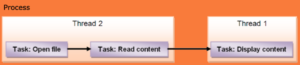

iOS 多线程学习
基础知识
并发和并行。从技术角度来看，并发是程序的属性，而并行运作是机器的属性。并行和并发是两种分开的概念。作为程序员，你不能保证你的代码会在能并行执行你的代码的机器上运行。然而，你可以设计你的代码，让它使用并发操作。
主要术语：
- 任务：一项需要完成的，简单，单一的任务。
- 线程：一种由操作系统提供的机制，允许多条指令在一个单独的程序中同时执行。
- 进程：一段可执行的代码，它可以由几个线程组成。
进程，线程和任务之间的关系：
注意：
在iPhone和Mac中，线程功能是由POSIX Threads API（或者pthreads）提供的，它是操作系统的一部分。这是相当底层的东西，你会发现很容易犯错；也许线程最坏的地方就是那些极难被发现的错误吧！
Foundation 框架包含了一个叫做NSThread的类，他更容易处理，但是使用NSThread管理多个线程仍然是件令人头疼的事情。NSOperation和NSOperationQueue是更高级别的类，他们大大简化了处理多个线程的过程。
NSThread
创建和启动
看文档可以了解到，创建一个线程主要有两个方法：
- (id)init; // designated initializer
- (id)initWithTarget:(id)target selector:(SEL)selector object:(id)argument;
使用以上两种方法创建的线程需要手动启动：
- (void)start;
另外还有一种比较特殊，就是使用所谓的 convenient method，这个方法可以直接生成一个线程并启动它，而且无需为线程的清理负责。
+ (void)detachNewThreadSelector:(SEL)selector toTarget:(id)target withObject:(id)argument;
线程同步
想一下多个窗口同时售票的售票系统。
//
// AppDelegate.h
// SellTicket
//
// Created by Chan Donly on 13-1-6.
// Copyright (c) 2013年 Diaoser. All rights reserved.
//
#import <UIKit/UIKit.h>
@interface AppDelegate : UIResponder <UIApplicationDelegate>
{
int tickets;
int count;
NSThread *ticketsThreadone;
NSThread *ticketsThreadtwo;
NSCondition *ticketsCondition;
}
@property (strong, nonatomic) UIWindow *window;
@end
类的实现：
//
// AppDelegate.m
// SellTicket
//
// Created by Chan Donly on 13-1-6.
// Copyright (c) 2013年 Diaoser. All rights reserved.
//
#import "AppDelegate.h"
@implementation AppDelegate
- (void)dealloc
{
[ticketsThreadone release];
[ticketsThreadtwo release];
[ticketsCondition release];
[_window release];
[super dealloc];
}
- (BOOL)application:(UIApplication *)application didFinishLaunchingWithOptions:(NSDictionary *)launchOptions
{
self.window = [[[UIWindow alloc] initWithFrame:[[UIScreen mainScreen] bounds]] autorelease];
// Override point for customization after application launch.
tickets = 100;
count = 0;
// 锁对象
ticketsCondition = [[NSCondition alloc] init];
ticketsThreadone = [[NSThread alloc] initWithTarget:self selector:@selector(run) object:nil];
[ticketsThreadone setName:@"Thread-1"];
[ticketsThreadone start];
ticketsThreadtwo = [[NSThread alloc] initWithTarget:self selector:@selector(run) object:nil];
[ticketsThreadtwo setName:@"Thread-2"];
[ticketsThreadtwo start];
//[NSThread detachNewThreadSelector:@selector(run) toTarget:self withObject:nil];
[self.window makeKeyAndVisible];
return YES;
}
- (void)run {
while (TRUE) {
// 上锁
[ticketsCondition lock];
if (tickets >= 0) {
[NSThread sleepForTimeInterval:0.2];
count = 100 - tickets;
NSLog(@"当前票数是:%d,售出:%d,线程名:%@", tickets, count, [[NSThread currentThread] name]);
tickets--;
}
else {
break;
}
// [ticketsCondition signal];
// 解除锁
[ticketsCondition unlock];
}
}
@end
运行结果：
当前票数是:100,售出:0,线程名:Thread-1
当前票数是:99,售出:1,线程名:Thread-2
当前票数是:98,售出:2,线程名:Thread-1
当前票数是:97,售出:3,线程名:Thread-2
...
线程交互
如在主线程中修改界面。
- (void)performSelectorOnMainThread:(SEL)aSelector withObject:(id)arg waitUntilDone:(BOOL)wait
在本过程中，可能需要释放一些资源，则需要使用NSAutoreleasePool来进行管理。
- (void)startTheBackgroundJob {
NSAutoreleasePool *pool = [[NSAutoreleasePool alloc] init];
// to do something in your thread job
...
[self performSelectorOnMainThread:@selector(makeMyProgressBarMoving) withObject:nil waitUntilDone:NO];
[pool release];
}
如果某个ViewController里运行了一个Thread，Thread还没结束的时候，这个ViewController被Release了，结果会如何？
经过的的测试，Thread 不结束，ViewController 一直保留，不会执行 dealloc 方法。
NSOperation
NSoperation也是多线程的一种，NSopertaion有2种形式
并发执行
并发执行你需要重载如下4个方法
//执行任务主函数，线程运行的入口函数
- (void)start {}
//是否允许并发，返回YES，允许并发，返回NO不允许。默认返回NO
- (BOOL)isConcurrent {}
- (BOOL)isExecuting {}
//是否已经完成，这个必须要重载，不然放在放在NSOperationQueue里的NSOpertaion不能正常释放。
- (BOOL)isFinished {}
比如一个 TestNSOperation:NSoperaion 对象 testOperation 重载上述的4个方法，
NSOperationQueue *queue = [[[NSOperationQueue alloc ] init] autorelease];
[queue addOperation:testOperation];
会自动调用 testOperation 里的 start 函数，如果需要多个 NSOperation, 你需要设置 queue 的一些属性，如果多个 NSOperation 之间又依赖关系，也可以设置，具体可以参考 API 文档。